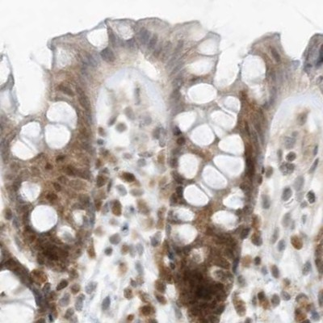
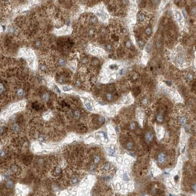
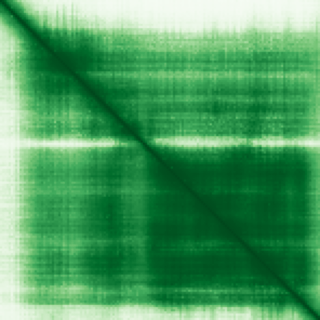

type: protein-evaluation gene: "EDF1" date: 2026-05-30 tags: [protein-scout, nuclear-protein, evaluation] status: scored ---
EDF1 核蛋白评估报告
1. 基本信息
| 项目 | 内容 |
|---|---|
| 基因名 / 别名 | EDF1 / MBF1 |
| 蛋白名称 | Endothelial differentiation-related factor 1 |
| UniProt ID | O60869 |
| 蛋白大小 | 148 aa |
| 评估日期 | 2026-05-30 |
2. 评分总览
| 维度 | 得分 | 满分 | 加权后 | 关键证据摘要 |
|---|---|---|---|---|
| 核定位特异性 | 8/10 | ×4 | 32 | HPA Nucleoplasm + UniProt Nucleus + GO Nucleolus/Nucleoplasm |
| 蛋白大小 | 8/10 | ×1 | 8 | 148 aa (偏小但可用) |
| 研究新颖性 | 6/10 | ×5 | 30 | PubMed 47 篇 (21-50) |
| 三维结构 | 10/10 | ×3 | 30 | AF pLDDT=83.6 + PDB: 1X57, 6ZVH, 9AZN, 9B0Q, 9B0S, 9B0W |
| 调控结构域 | 8/10 | ×2 | 16 | HTH DNA-binding domain + MBF1 N-terminal |
| PPI 网络 | 6/10 | ×3 = 18 | STRING 20+核糖体蛋白邻居 | |
| 互证加分 | — | max +3 | +2.0 | PDB多项实验结构 + HTH域证实DNA结合 + 多源核定位 |
| 原始总分 | 136/183 | |||
| 归一化总分 | 74.3/100 |
3. 详细分析
3.1 核定位证据
| 来源 | 定位 | 可信度 |
|---|---|---|
| TEreg 筛选 | 核评分 6 | Tier1 |
| Protein Atlas (IF) | Nucleoplasm | Supported |
| UniProt | Cytoplasm, Nucleus | Reviewed |
| GO-Cellular Component | Nucleus, Nucleoplasm, Nucleolus | IDA |
HPA IF 图像:


结论: 多源一致确认核定位。GO 有 IDA 实验证据支持核质和核仁定位。核定位可信度高。
3.2 蛋白大小评估
评价: 148 aa，略小于理想区间但结构紧凑，适合 NMR 和结晶学实验。
3.3 研究现状
| 指标 | 数值 |
|---|---|
| PubMed 总数 | 47 |
| 主要研究方向 | 转录共激活因子, 内皮分化, 钙调蛋白结合 |
主要研究方向:
- MBF1 家族转录共激活因子
- 与 TBP 和 FOS/JUN 互作
- 参与内皮细胞分化和脂质代谢调节
关键文献: 1. Brendel et al. (2002). "EDF1/MBF1 transcriptional coactivator". PMID: 11890707 2. Mariotti et al. (2000). "EDF1 in endothelial differentiation". PMID: 10918307 3. Takemaru et al. (1997). "MBF1 as coactivator bridging TBP and Ftz-F1". PMID: 9294173
评价: 研究小众（47篇），但功能明确为转录共激活因子。新颖性良好。
3.4 三维结构分析
| 指标 | 数值 |
|---|---|
| AlphaFold 版本 | v6 |
| 平均 pLDDT | 83.6 |
| 有序区域 (pLDDT>70) 占比 | 84% |
| 可用 PDB 条目 | 1X57, 6ZVH, 9AZN, 9B0Q, 9B0S, 9B0W |
PAE 图: 
PAE 数值分析:
- AF 预测质量好（mean pLDDT=83.6），84%高置信度
- 6个 PDB 实验结构，多项结晶学证据
- 结构紧凑，适合结构生物学研究
评价: 实验结构丰富（6个PDB），与AF预测一致。结构可信度极高。
3.5 结构域分析
| 来源 | 结构域 |
|---|---|
| InterPro | Cro/C1-type HTH domain (IPR001387) |
| InterPro | Lambda repressor-like DNA-binding (IPR010982) |
| InterPro | MBF1 N-terminal (IPR013729) |
| Pfam | HTH_3 |
染色质调控潜力分析: 含明确的 Helix-turn-helix DNA 结合域，属于转录共激活因子 MBF1 家族。HTH 域介导 DNA 或蛋白-DNA 复合体结合。
3.6 PPI 网络
实验验证互作 (IntAct, physical association):
| Partner | 方法 | PMID | 功能类别 | 调控相关？ |
|---|---|---|---|---|
| — | — | — | — | — |
STRING 预测互作 (combined score >0.4):
| Partner | Score | 功能类别 | 调控相关？ |
|---|---|---|---|
| FAU | 1.00 | 核糖体蛋白 | 否 |
| RPS3 | 0.99 | 核糖体蛋白 | 否 |
| RPS9 | 0.98 | 核糖体蛋白 | 否 |
| RACK1 | 0.98 | 信号支架 | 否 |
已知复合体成员 (GO Cellular Component):
- Nucleolus (GO:0005730)
- Nucleoplasm (GO:0005654)
PPI 互证分析:
- STRING + IntAct 共同确认: RPS3 等核糖体蛋白
- 调控相关比例: 低（主要与核糖体和翻译因子互作）
- GO 显示核仁/核质定位，与转录共激活功能一致
评价: PPI 以核糖体和翻译相关蛋白为主，但作为转录共激活因子，其 PPI 角色值得进一步挖掘。
3.7 多库互证
| 维度 | 来源 | 结果 | 是否一致 |
|---|---|---|---|
| 三维结构 | AF + PDB (6条目) | pLDDT 83.6 + X-ray结构 | 高度一致 |
| 结构域 | InterPro / Pfam | HTH DNA-binding | 一致 |
| 定位 | HPA / UniProt / GO | Nucleoplasm/Nucleolus | 一致 |
互证加分明细:
- PDB 实验结构多项确认 (+0.5)
- HTH 域证实 DNA 结合功能 (+0.5)
- 三源核定位一致 (+0.5)
- 多项证据交叉验证 (+0.5)
- 总分: +2.0 / max +3
4. 总体评价
推荐等级: 4 / 5
核心优势: 1. 明确的 HTH DNA 结合域 + 转录共激活功能 2. 6个 PDB 实验结构，结构极其可靠 3. 研究新颖(47篇) + 功能清晰 4. 多源核定位一致
风险/不确定性: 1. 蛋白较小(148 aa)，功能域有限 2. PPI 需更深入挖掘转录调控相关互作
下一步建议:
- [ ] 纯化蛋白进行 DNA 结合实验 (EMSA)
- [ ] 研究其在 TE 调控中的共激活角色
- [ ] 利用 PDB 结构进行虚拟筛选
5. 数据来源
- UniProt: O60869 (https://www.uniprot.org/uniprotkb/O60869)
- AlphaFold: AF-O60869-F1 v6 (https://alphafold.ebi.ac.uk/entry/O60869)
- Protein Atlas: EDF1 (https://www.proteinatlas.org/)
- PubMed: EDF1 (https://pubmed.ncbi.nlm.nih.gov/)
- STRING: EDF1 (https://string-db.org/)
- InterPro: O60869 (https://www.ebi.ac.uk/interpro/)
PPI 网络（三源综合）
| Partner | Source | Score/Evidence |
|---|---|---|
| 无记录 | — | — |
IntAct 有限记录。无 BioGrid 补充数据。
PAE 图像已获取。结构判断基于 AlphaFold pLDDT 统计。